Die Saldenliste ist die Aufstellung der Konten mit den Kontenumsatzdaten der laufenden Periode, der kumulierten Werte und des Saldos. Der Aufruf erfolgt über den Menüpunkt…
1 WinLine FIBU
1 Auswertungen
1 Saldenliste
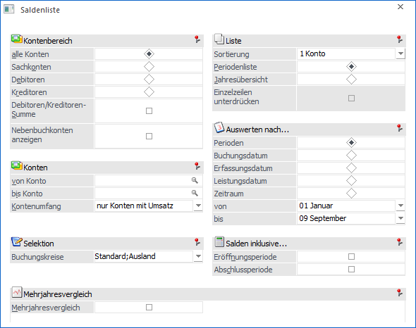
Der Umfang der Auswertung kann durch eine Reihe von Selektionskriterien eingeschränkt werden.
Kontenbereich
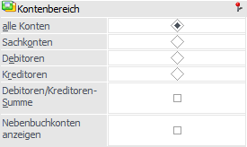
Ø Kontenbereich
An dieser Stelle kann der grundsätzliche Kontenbereich der Auswertung definiert werden.
ü alle Konten
Alle Konten der
festgelegten Auswahl von Konto bis Konto werden ausgegeben.
ü Sachkonten (ohne
Deb./Kred.-Summe)
Es werden nur die Sachkonten angedruckt. Debitoren bzw.
Kreditoren werden nicht berücksichtigt, auch wenn sie in den selektierten
Kontenbereich fallen.
ü Debitoren
Es werden nur
Debitorenkonten ausgewertet.
ü Kreditoren
Es werden nur
Kreditorenkonten ausgewertet.
Ø mit Deb./Kred. Summe
Durch Aktivieren dieser Option wird für die Debitoren und Kreditoren, die im ausgewählten Bereich liegen, eine Summe gebildet. Je nach aktiver bzw. inaktiver Option "Salden inkl. Eröffnungsperiode bzw. Abschlussperiode" werden bei den Deb./Kred. Summen (in den Perioden) die Werte der EB bzw. AB berücksichtigt.
Hinweis
Die Salden für Personenkonten, die einem Hauptbuchkonto zugewiesen sind, werden nicht nochmal bei den Debitoren-/Kreditoren-Summen berücksichtigt (die Salden sind beim Hauptbuchkonto, d.h., ein Sachkonto ausgewiesen).
Ø Nebenbuchkonten anzeigen
Ist diese Option nicht gesetzt (Standardeinstellung beim Öffnen des Fensters), so werden die Salden von Hauptbuchkonten und Konten, die weder Hauptbuchkonten sind, noch einem Hauptbuchkonto zugewiesen sind ausgewertet.
Ist die Option hingegen aktiviert, werden die Salden von Nebenbuchkonten und Konten, die nicht einem Hauptbuchkonto zugewiesen sind, ausgewertet. Im aktivierten Zustand werden auch Salden von Hauptbuchkonten angezeigt, welche durch direktes Buchen auf das Hauptbuchkonto selbst entstanden sind.
Hinweis
Die Einstellung wird in der Saldenliste nach Konto, BKZ 1-3, BWA 1-3, Jahresübersicht und Mehrjahresvergleich berücksichtigt.
Achtung
Die Option steht nicht zur Verfügung, wenn keine Hauptbuchkonten im Mandant definiert sind.
Konten
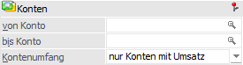
Ø Konto von / bis
Hier kann eine Einschränkung der Ausgabe durch Angabe von Kontengrenzen erfolgen. Werden die Felder leer gelassen, so bewirkt dieses die Ausgabe aller Konten.
Ø Kontenumfang
Für die Ausgabe des Kontenumfangs gibt es folgende Auswahlmöglichkeiten:
ü nur Konten mit Umsatz
Es werden
nur die Konten, welche im aktuellen Wirtschaftsjahr einen Saldo in einer Spalte
aufweisen, ausgegeben.
ü alle bebuchten Konten
Es werden
alle Konten, welche im aktuellen Wirtschaftsjahr bebucht wurden, ausgegeben
(auch wenn sie keinen Saldo ausweisen, z.B. durch Buchung von 100,-- und -100,--
im Soll).
ü alle Konten
Es werden alle
Konten ausgegeben, unabhängig davon, ob sie bebucht wurden oder nicht.
Selektion
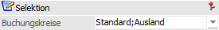
Ø Buchungskreise
In der Saldenliste kann auf Buchungskreise eingeschränkt werden. In der Auswahllistbox werden nur jene Buchungskreise angezeigt, für die der Benutzer die Berechtigung hat.
Werden nicht alle Buchungskreise für die Ausgabe ausgewählt, werden die selektierten Buchungskreise im Kopf der Auswertung angedruckt.
Die Auswahllistbox ist nur aktiv, wenn die entsprechende Lizenz vorhanden ist.
Liste
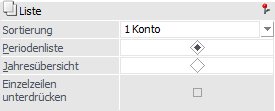
Ø Sortierung
An dieser Stelle kann definiert werden, nach welcher Sortierung die Saldenliste ausgegeben werden soll. Folgende Möglichkeiten stehen zur Verfügung:
ü 1 - Konto
ü 2 - BKZ1
ü 3 - BWA1
ü 4 - BWA2
ü 5 - BWA3
ü 6 - Kontenklasse (Summen pro Kontenklasse, EB-Soll- und Haben, Perioden Soll- und Haben)
ü 7 - BKZ2
ü 8 - BKZ3
Ø Periodenliste / Jahresübersicht
Hier kann entschieden werden, ob die Liste als "Periodenliste" oder als "Jahresübersicht" ausgedruckt werden soll.
ü Periodenliste
Bei der
Periodenliste werden die aktuellen Salden der ausgewählten Konten angezeigt. EB
Soll und EB Haben wird auf der Periodenliste in einer eigenen Spalte angedruckt.
Ob die EB- und AB-Werte in den Salden berücksichtigt werden, wird mit den
Checkboxen Eröffnungsperiode- und Abschlussperiode gesteuert.
ü Jahresübersicht
Bei der
Jahresübersicht ist der Saldo der einzelnen Buchungsperioden ersichtlich. Die
EB- und AB-Salden werden getrennt dargestellt. Der kumulierte Saldo (inkl. EB
und AB) bzw. der Saldo ohne EB/AB werden in einer eigenen Spalte ausgewiesen.
Ø Einzelzeilen unterdrücken
Diese Option steht bei der Sortierung nach "BKZ", "BWA" oder "Kontenklasse" zur Verfügung. Wenn sie aktiviert ist, so werden die einzelnen Kontenzeilen nicht angedruckt (z.B. die Auswertung enthält nur Salden bei den angedruckten BKZs.)
Auswerten nach…
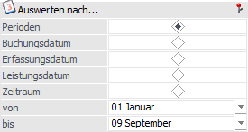
Ø Perioden / Buchungsdatum / Erfassungsdatum / Leistungsdatum / Zeitraum
An dieser Stelle kann definiert werden, nach welchem Bereich die folgende Selektion erfolgen soll.
Ø Periode / Datum / Zeitraum
Abhängig von der vorher getroffenen Auswahl, kann hier eine Selektion nach Periode, Datum oder Zeitraum erfolgen.
Salden inklusive…
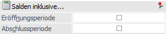
Die Optionen für Eröffnungs- und Abschlussperiode stehen nur bei der Auswertung der Periodenliste zur Verfügung.
Ø Eröffnungsperiode
Wird die Option der Eröffnungsperiode aktiviert, so werden in der Auswertung der Perioden (in der Spalte "Saldo EUR") auch die Werte der Eröffnungsperiode berücksichtigt.
Bei deaktivierter Option werden in der Auswertung der Perioden die Werte der Eröffnungsperiode nicht berücksichtigt.
Ø Abschlussperiode
Wird die Option der Abschlussperiode aktiviert, so werden in der Auswertung der Perioden (in der Spalte "Saldo EUR") auch die Werte der Eröffnungsperiode berücksichtigt.
Bei deaktivierter Option werden in der Auswertung der Perioden die Werte der Abschlussperiode nicht berücksichtigt.
Mehrjahresvergleich
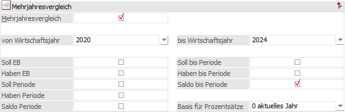
Ø Mehrjahresvergleich
Der Mehrjahresvergleich ermöglicht es die Daten von bis zu 5 aneinander folgenden Wirtschaftsjahren zu vergleichen. Diese Auswertung kann nach mehreren Selektionskriterien eingeschränkt werden.
Ø Soll EB / Haben EB
Fügt die EBs zur Endsumme hinzu.
Ø Soll Periode / Haben Periode
Druckt die Soll-/Habensumme der selektierten Perioden an.
Ø Saldo Periode
Berechnet den Saldo der selektierten Perioden.
Ø Soll bis Periode / Haben bis Periode
Berechnet die Summen von Soll und/oder Haben vom Beginn des Wirtschaftsjahres bis zum Ende der selektierten Perioden.
Ø Saldo bis Periode
Berechnet den Saldo vom Beginn des Wirtschaftsjahres bis zum Ende der selektierten Perioden.
Ø Basis für Prozentsätze
Folgende Einstellungen stehen für die Prozentberechnung zur Verfügung:
ü 0 - aktuelles Jahr
Als Basis
für Vergleichsauswertungen wird das aktuelle Jahr verwendet.
ü 1 - Folgejahr
Als Basis für
Vergleichsauswertungen wird das Folgejahr verwendet.
Hinweis
Der Mehrjahresvergleich findet immer auf Basis der Nebenbuchkonten (bzw. "normalen" Konten, die keinem Hauptbuchkonto zugewiesen sind) statt.
Buttons
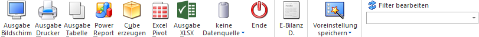
Ø Ausgabe Bildschirm
Mit Hilfe des Buttons "Ausgabe Bildschirm" oder der Taste F5 wird die Auswertung am Bildschirm ausgegeben.
Ø Ausgabe Drucker
Durch Anwahl des Buttons "Ausgabe Drucker" wird die Auswertung am Drucker ausgegeben.
Ø Ausgabe Tabelle
Bei der Anwahl des Buttons "Ausgabe Tabelle" wird die Saldenliste in Form einer WinLine Tabelle dargestellt (nähere Informationen entnehmen Sie bitte dem Kapitel Saldenliste Tabelle).
Ø Power Report
Durch Drücken des Buttons "Power Report" wird die Auswertung auf Basis von Cube-Daten grafisch dargestellt. Die Ausgabe ist individuell anpassbar und erfolgt in der Form von "Widgets", die unterschiedlichsten Darstellungen ermöglichen.
Ø Cube erzeugen
Wenn die Option "Cube erzeugen" gewählt wird (nur möglich, wenn auch die entsprechende Lizenz dafür vorhanden ist), dann wird die Saldenliste im "Olap Viewer" angezeigt. In diesem können die Daten nach verschiedenen Gesichtspunkten ausgewertet werden.
Ø Ausgabe Excel Pivot
Durch Anwahl des Buttons "Excel Pivot" werden die selektierten Zeilen in Form einer Pivot Ausgabe in Microsoft Excel (2007 oder höher) angezeigt.
Ø Ausgabe XLSX
Mit Hilfe des Buttons "Ausgabe XLSX" wird die Auswertung mit den von Ihnen definierten Selektionen an Microsoft Excel übergeben.
Ø Datenquelle
Mit Hilfe dieser Auswahl kann definiert werden, ob und wie eine Datenquelle (d.h. ein Snapshot oder eine MasterView) verwendet werden soll.
ü Keine Datenquelle
Bei Auswahl
von "keine Datenquelle" wird keine zuvor angelegte Datenquelle genutzt. D.h. die
Daten werden von der WinLine "live" ermittelt und in der gewünschten Form
ausgegeben.
Hinweis
Da die BI-Ausgabe (z.B. Cube oder Power Report) immer eine Datenquelle benötigt, wird im Hintergrund eine temporäre Datenquelle (Snapshot) gebildet.
ü Datenquelle
erstellen/aktualisieren
Die Daten werden zur Laufzeit ermittelt und an einen
zu definierenden Snapshot übergeben. Nach dem Füllen der Datenquelle wird die
gewünschte Ausgabevariante über die Datenquelle erzeugt. Dieser Vorgang kann mit
einer Zeitverzögerung verbunden sein, da die Daten zusätzlich gespeichert werden
müssen.
ü Datenquelle verwenden
Bei der
Verwendung eines Snapshots werden die Daten direkt aus der Datenquelle gelesen,
d.h. die für die Ausgabe benötigten Daten können ohne Verzögerung in der
gewünschten Variante ausgegeben werden.
Wird hingegen eine MasterView
gewählt, so werden die Daten für die Ausgabe "live" ermittelt, wobei diese so
aktuell sind wie die zugrunde liegenden Datenquellen.
Hinweis
Der Button "Datenquelle verwenden" wird nur angeboten, wenn für diesen Bereich (bezogen auf den aktuellen Benutzer / Mandanten) zumindest eine private oder öffentliche Datenquelle existiert. Des Weiteren stehen nur die Ausgabevarianten "Power Report", "Cube erzeugen", "Excel Pivot" und "Ausgabe XLSX" zur Verfügung.
Hinweis
Weitere Informationen zum Thema "Datenquellen" entnehmen Sie bitte dem Kapitel "Die Datenquelle".
Ø Ende
Durch Drücken der ESC-Taste wird das Fenster geschlossen, es wird keine Auswertung ausgegeben.
Ø E-Bilanz D.
Über diesen Button kann mit den hinterlegten Einstellungen eine csv-Datei erstellt werden, welche anschließend in das Tool "WinLine E-Bilanz D" eingelesen werden kann. Hierfür öffnet sich zunächst der Dialog zum Speichern der csv-Datei (inklusive Angabe des Speicherorts und des Dateinamens).
Hinweis
Bei Erstellung der Datei wird geprüft, ob die Ausgabe inklusive Eröffnungs- und / oder Abschlussperiode erfolgt. Falls eine der Checkboxen nicht gesetzt ist, erfolgt eine entsprechende Hinweismeldung:
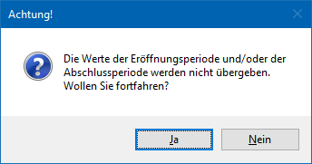
Wird die Meldung mit "Ja" bestätigt, so kann die Datei gespeichert werden. Bei Bestätigung mit "Nein" wird wieder das Selektionsfenster der Saldenliste angezeigt und es können die gewünschten Änderungen vorgenommen werden.
Ø Voreinstellung speichern
Durch Anwahl dieses Buttons erfolgt eine benutzerspezifische Speicherung aller im Fenster getätigten Einstellungen. Diese sogenannten "Voreinstellungen" können jederzeit wieder abgerufen werden und ermöglichen dadurch ein schnelleres und zielorientierteres Arbeiten (nähere Informationen entnehmen Sie bitte dem Kapitel "Die Voreinstellungen").
Ø Filter bearbeiten
Durch Anwahl des Filter-Buttons kann eine detailliertere Einschränkung der Konten vorgenommen werden, für die eine Saldenliste ausgedruckt werden soll.
Hinweis
Im Filter wird berücksichtigt, ob die Checkbox "Nebenbuchkonten anzeigen" gesetzt ist oder nicht, d.h. bei der Einschränkung eines Wertes aus den FIBU-Salden wird abhängig von der Option der entsprechende Haupt- oder Nebenbuchkonten-Satz geprüft.
Besonderheiten beim Aufruf dieses Fenster aus dem Menüpunkt "Reportdefinition"
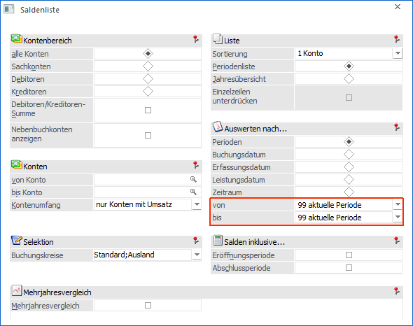
Ø Monat
In der Auswahllistbox der Perioden gibt es zusätzlich den Eintrag "99 aktuelle Periode". Falls dieser Eintrag gewählt wurde, wird bei der Vorschau des Reports bzw. beim Erzeugen des Reports die Periode mit der Periode des aktuellen Datums belegt.
Ø Ausdruck
Auf der letzten Seite der Ausgabe wird das Datum der Erstellung angedruckt.